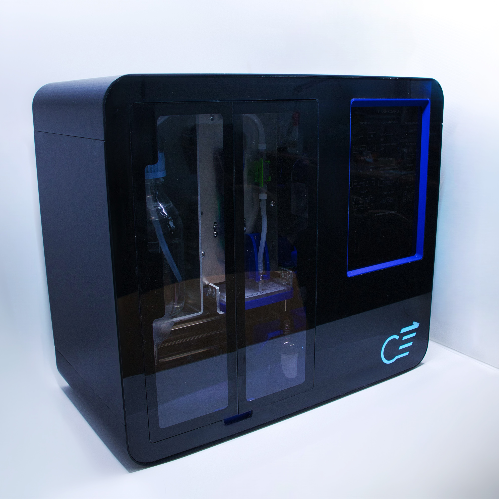
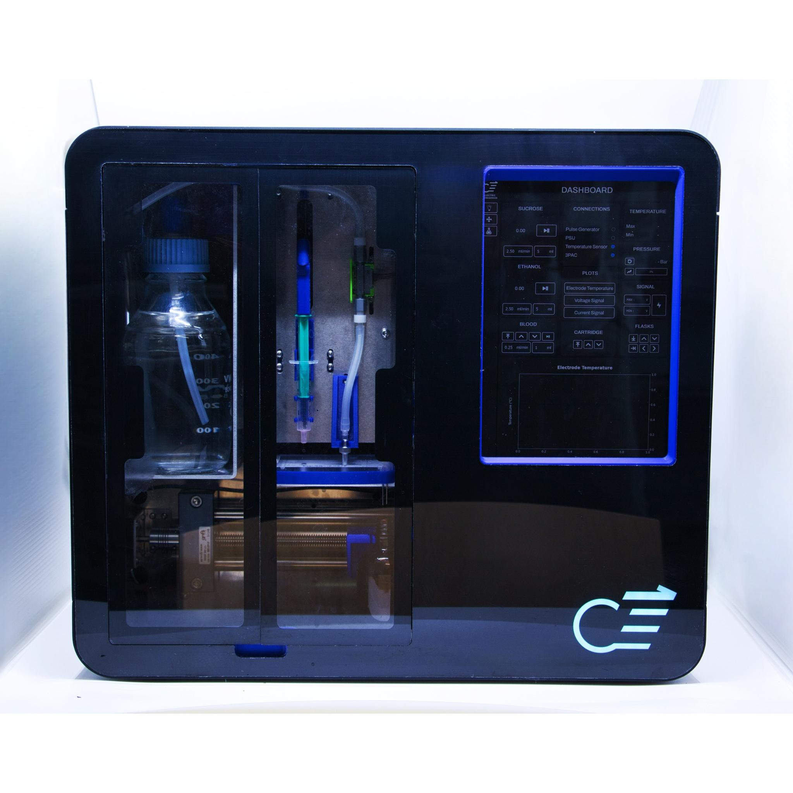
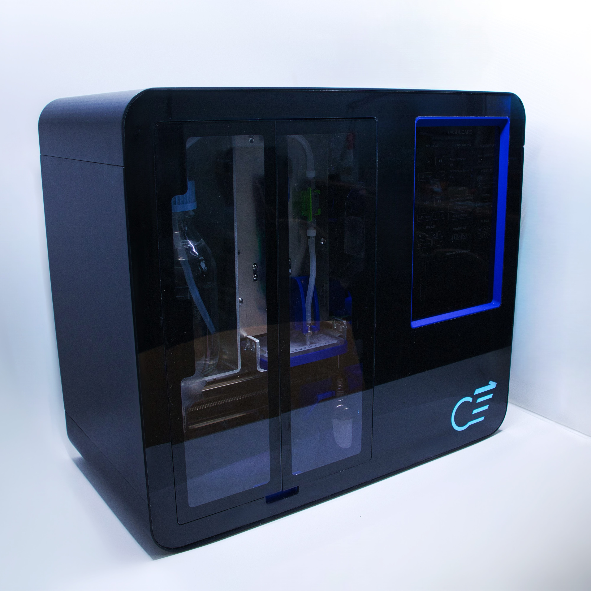
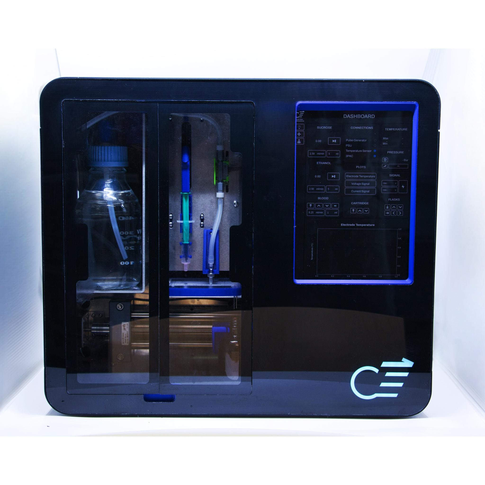

Design Portfolio | 2022-2025
Vienna, Austria | Italian & RSA Passport
Phone: +43 660 827 1605
Email: ashermvalentini@gmail.com
 



Cellectric Base Station
A medical device (RUO) designed for fully automated and semi-automated proprietary workflows in medical sample preparation.
Key Highlights:
- Microfluidics module firmware, hardware and mechanical implementation
- Control application's software design
- GUI development with Qt
- Protocol automation and DevOps (CI/CD, SW testing)
- Deployed in hospitals, clinical trials, and research labs across 2 countries
Cellectric Base Station
A medical device (RUO) designed for fully automated and semi-automated proprietary workflows in medical sample preparation. The product's design and manufacturing was a collaborative effort of two mechanical engineers, one power electronic engineer and myself (embedded software and microfluidics).
Key Highlights:
- I held the lead responsibility for the:
- Microfluidics module's firmware, hardware and mechanical implementation
- Control application's software design
- Graphical user interface (GUI) development
- Experiment protocol automation
- Software DevOps (CI/CD pipelines and SW testing)
- Deployed in:
- 1 hospital
- 1 clinical trial
- 3 research laboratories
- 1 university
- 2 countries
Piezo Driver v1.1
A personal development of a piezoelectric micropump driver circuit board for pressure driven liquid control in microfluidic systems.
Key Highlights:
- Hardware
- Drives up to 4 Lee Company HP SERIES micropumps (600mBar/pump)
- Onboard ESP32 with an FTDI UART to USB converter
- 4 voltage boosters controlling highside voltages to 4 H-Bridges
- 4 current tracking op amps for peripheral impedance feedback
- Firmware
- Drive frequency optimization algorithm
- PID control algorithm regulating PWM signals to voltage boosters
- H-Bridge driving logic with shoot-through protection
- RTOS based structure
- Custom RPC for serial over USB and/or I2C communication
Cross-Platform Desktop Application with Qt
Here is a closer look at the Cellectric Base Station's control application for sensor feedback visualization and device control. Hover over the videos to see the GUI and control software in action.
Key Highlights:
- Multithreaded application following OOP, MVC, and event-driven design patterns
- Embedded protobuf serialization
- Custom built state machine for serial over USB communication sequencing
- Data handling and visualization
- Working fluid flow rate feedback
- Current and voltage feedback from a propriety signal generator
- Temperature feedback
- Device connection statuses
- Control
- 2 peristaltic pumps
- 4 stepper motors
- 2 peltier pads (on/off algorithm for temperature control)
- 1 Power Supply Unit's actuation and voltage rail settings
- 1 Signal Generator's actuation, frequency and duty cycle settings
- 4 Automated experiment protocols
Stepper Motor Driver Board
A personal development of a stepper motor driver control board for interfacing with TMC2209v1.1-v.3 stepper motor driver breakout boards.
Key Highlights:
- Hardware
- 4x stepper motor driver interfaces
- 4x limit switch sensor feedback interfaces
- 8x jumper interfaces for hardware based microstep configuration
- Interfaces for I2C and USB transport layers
- Firmware
- ESP32 to TMC2209 UART interface for software based microstep configuration
- Impedance based limit detection
- RTOS based structure
- Custom RPC for serial over USB and/or I2C communication protocols
- Personal/Commercial applications:
- Belt drives (Personal Project)
- Lead screws (Personal Project)
- Syringe pumps (Personal Project)
- Peristaltic pumps (Cellectric Base Station Microfluidics Module)
- Ball on a Plate (Personal Project)
Ball on a Plate
Like its name, this project is underdevelopment. The idea being to control a plate's orientation to automatically balance a ball at various set-point positions on the plate. The projects mechanical, electronic, and motion tracking software design are all complete. Currently, I am working on the position control algorithm.
Key Highlights:
- Manual/Automatic control over plate orientation
- Cross platform control application with interactive GUI
- Ball position video feedback
- Embedded switching power supply
- Electronics housing unit
- Compatible with OpenMV and OpenCV feedback
Cross Platform Control Application with Qt
Here is a closer look at the Ball on a Plate's control application and GUI. The software allows the user to control the plate's two axis with a custom joystick widget(logic implemented), or select a quadrant for the system to automatically place the ball (logic underdevelopment). In addition to control, the GUI displays motion tracking video feedback and an interactive 3D model of the system.
Key Highlights:
- Libraries and Modules
- VTX for embedding 3D images into a GUI
- Custom module for 3D image mouse tracking
- OpenCV data handling
- Motion tracking algorithm reflected on video playback
- Custom joystick widget module
- Multithreaded application following OOP and event driven architecture design patterns
- Custom built state machine for serial over USB communication sequencing
Multipurpose Automation Controller
This board is a co-development with the talented Nicolas Heimburger (who thankfully took charge of routing the PCB). The board is a blanket controller for peripherals that one might require in any given robotics project.
My Contributions
- HW/SW for sensor feedback
- HW/SW for relay control
- HW/SW for LED drivers
- GPIO expander IC integration
- Current regulating IC integration for solenoid actuation and temperature control
Piezo Driver v1.0
The first iteration of my Piezoelectric micro-pump driver board. This board is designed to interface specifically with the Sensirion SLF flow rate sensor.
Key Highlights:- Hardware
- Drives up to 2 Lee Company XP SERIES micro-pumps (600mBar/pump)
- Onboard ESP32 with an FTDI UART to USB converter
- 2 voltage boosters controlling high-side voltages to 2 H-Bridges
- 2 current tracking op amps for peripheral impedance feedback
- Firmware
- PID control algorithm regulating PWM signals to voltage boosters
- H-Bridge driving logic
Now for Something Different
Inverse Game App
Simply a fun side project of a Flutter-based mobile game with interactive levels. The app is the birth child of a family dinner table game. The idea being to try guess the name of a movie based on the opposite title.
Key Highlights:
- IOS and Android compatibility (Inherent with Flutter SDK)
- Splash screen
- Custom built icon logo
- 18 Levels
- Level progression memory
- Animated answer feedback
Expert Advisor with MQL
Expert advisors are bots that automate trades based on trading algorithms. Above is a video of one of mine in action. I am not by any means an HFT algo developer, but I think this project displays the fact that I am happy to engage with tools and technologies that would traditionally fall out of the scope of embedded engineering.
Key Highlights:
- Linked and launched to stoke broker server
- 2 year back testing with tick-data suit